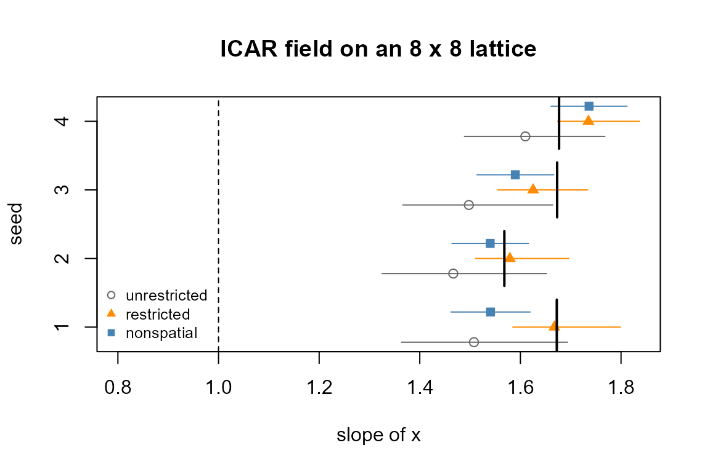
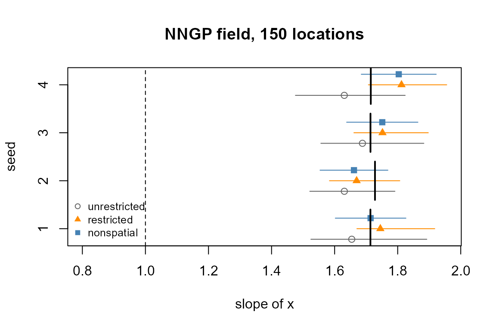

Spatial confounding and restricted spatial regression
Source:vignettes/articles/spatial-confounding.Rmd
spatial-confounding.RmdA covariate that varies smoothly over space, such as elevation or a
climate surface, shares its pattern with any unmeasured spatial driver
of the response. A spatial field and the covariate then compete for the
same variation, and the slope a spatial model reports depends on how
that competition is settled. This article simulates such data with a
known truth, fits an unrestricted spatial model, a restricted spatial
regression (RSR) built with spatial_rsr(), and a model
without a field, and reads each slope against the two quantities it
could be estimating. It covers an areal field on a lattice and a
continuous nearest-neighbour Gaussian process (NNGP) field, and ends
with the cases where RSR is the wrong choice. The areal and continuous
fields themselves are introduced in Spatial models. Installation is covered
in Get started.
Two slopes for one covariate
Write the linear predictor of observation at location as
where is the covariate, its slope and a spatial field. In the simulations below the field is , a smooth surface scaled by , and the covariate is built to correlate with .
The slope is the change in per unit of with the field held fixed. Call it the conditional slope . The covariate also carries part of the field: regressing on over the observations gives , with and a remainder uncorrelated with . Inserting this into the linear predictor gives
The coefficient is the marginal slope: the association between and the response with the field left free to move with . The two slopes differ by , the projection of the field onto the covariate, and both are well defined. Which one a model estimates is a property of the model.
Restricted spatial regression (Reich et al. 2006; Hodges and Reich
2010) removes from the field every direction the restricted design can
explain. With
the design of restrict_to (an intercept and
here) and
its projection, the field enters the linear predictor as
.
The part of the field aligned with
is then carried by the slope, so the restricted model estimates
(Bradley 2024). A model with no field carries all of
in the slope and the residual, and estimates
as well.
An areal example on a lattice
Put 64 regions on an 8 by 8 lattice, each adjacent to the regions
that share an edge with it. W is the adjacency matrix and
xy holds the lattice coordinates of each region.
k <- 8
xy <- cbind(rep(1:k, k), rep(1:k, each = k))
W <- 1 * (as.matrix(dist(xy)) == 1)
dim(W)
#> [1] 64 64sim_areal() draws a smooth surface s over
the lattice from an exponential covariance with range 3 cells,
standardised to mean 0 and SD 1. The covariate of a region is
rho * s plus independent noise, standardised again, so with
rho = 0.8 it correlates with the surface. Each region holds
six observations of a binomial count out of 20 trials, with conditional
slope beta = 1 and field gamma * s at
gamma = 0.8. The function returns the data with both
truths: beta_c is the slope used to simulate, and
beta_m adds the slope of the regression of the field on the
covariate over the observations.
sim_areal <- function(seed, beta = 1, gamma = 0.8, rho = 0.8, m = 6) {
set.seed(seed)
K <- exp(-as.matrix(dist(xy)) / 3) + diag(1e-8, nrow(xy))
s <- as.numeric(scale(t(chol(K)) %*% rnorm(nrow(xy))))
xr <- as.numeric(scale(rho * s + sqrt(1 - rho^2) * rnorm(nrow(xy))))
region <- rep(seq_len(nrow(xy)), each = m)
w <- gamma * s[region]
x <- xr[region]
y <- rbinom(length(x), 20, plogis(-0.2 + beta * x + w))
list(d = data.frame(y = y, x = x, region = region),
beta_c = beta, beta_m = beta + coef(lm(w ~ x))[["x"]])
}
sim <- sim_areal(1)
c(conditional = sim$beta_c, marginal = sim$beta_m)
#> conditional marginal
#> 1.000000 1.672309On this seed the marginal slope is about two thirds larger than the conditional one, because the covariate shares much of its variation with the field.
Three fits on the same data
The spatial specification is an intrinsic CAR field on the lattice,
spatial_car(W), with one effect per level of
region. spatial_rsr() takes that specification
and the formula of the covariates the field is to be orthogonal to, and
returns the same field with the restriction attached. Both spatial fits
run on nested Laplace (mode = "nested_laplace"), which
integrates the field’s precision over a grid; the non-spatial fit is a
plain Laplace fit.
car <- spatial_car(W, level = "group", group_var = "region")
rsr <- spatial_rsr(car, restrict_to = ~ x)
ctl <- list(n_threads = 2, progress = FALSE)
nt <- rep(20L, nrow(sim$d))
fit_u <- tulpa(y ~ x + spatial(region), data = sim$d, family = "binomial",
n_trials = nt, spatial = car, mode = "nested_laplace",
control = ctl)
fit_r <- tulpa(y ~ x + spatial(region), data = sim$d, family = "binomial",
n_trials = nt, spatial = rsr, mode = "nested_laplace",
control = ctl)
fit_0 <- tulpa(y ~ x, data = sim$d, family = "binomial", n_trials = nt,
mode = "laplace")coef(summary(fit)) is the fixed-effect table of a fit.
The rows for x of the three fits, side by side:
slope_row <- function(fit) coef(summary(fit))["x", ]
round(rbind(unrestricted = slope_row(fit_u),
restricted = slope_row(fit_r),
nonspatial = slope_row(fit_0)), 3)
#> estimate std.error 2.5 % 97.5 %
#> unrestricted 1.508 0.084 1.364 1.694
#> restricted 1.667 0.055 1.585 1.799
#> nonspatial 1.541 0.040 1.462 1.619None of the three intervals contains the conditional slope of 1. The restricted estimate, 1.667, lands on the marginal slope of 1.672. The non-spatial estimate, 1.541, is lower, and its interval stops short of the marginal slope on this seed. The unrestricted estimate, 1.508, lies between the two truths: the field took part of the shared variation and the slope took the rest.
Which slope each fit targets
A single seed can land anywhere within its interval, so repeat the
three fits over four seeds. three_fits() fits the three
models to one simulated dataset and returns the estimate and the 95%
bounds of each slope, with the two truths. It takes the spatial
specification and the formula, so the continuous example below reuses
it.
three_fits <- function(sim, spec, f_sp, n_trials) {
fits <- list(
unrestricted = tulpa(f_sp, data = sim$d, family = "binomial",
n_trials = n_trials, spatial = spec,
mode = "nested_laplace", control = ctl),
restricted = tulpa(f_sp, data = sim$d, family = "binomial",
n_trials = n_trials,
spatial = spatial_rsr(spec, restrict_to = ~ x),
mode = "nested_laplace", control = ctl),
nonspatial = tulpa(y ~ x, data = sim$d, family = "binomial",
n_trials = n_trials, mode = "laplace"))
tab <- t(sapply(fits, function(f) unlist(coef(summary(f))["x", c(1, 3, 4)])))
data.frame(fit = rownames(tab), est = tab[, 1], lo = tab[, 2],
hi = tab[, 3], beta_c = sim$beta_c, beta_m = sim$beta_m)
}
areal <- do.call(rbind, lapply(1:4, function(seed) {
cbind(seed = seed, three_fits(sim_areal(seed), car, y ~ x + spatial(region),
rep(20L, 384)))
}))The plot draws each fit’s interval per seed, with the conditional slope as a dashed vertical line and each seed’s marginal slope as a short solid tick.
Plotting code
plot_slopes <- function(res, main) {
fits <- c("unrestricted", "restricted", "nonspatial")
pch <- c(1, 17, 15)
col <- c("grey40", "darkorange", "steelblue")
ypos <- res$seed + (match(res$fit, fits) - 2) * 0.22
plot(res$est, ypos, xlim = range(0.8, res$lo, res$hi), yaxt = "n",
pch = pch[match(res$fit, fits)], col = col[match(res$fit, fits)],
xlab = "slope of x", ylab = "seed", main = main)
axis(2, at = unique(res$seed))
segments(res$lo, ypos, res$hi, ypos, col = col[match(res$fit, fits)])
abline(v = res$beta_c[1], lty = 2)
bm <- unique(res[, c("seed", "beta_m")])
segments(bm$beta_m, bm$seed - 0.4, bm$beta_m, bm$seed + 0.4, lwd = 2)
legend("bottomleft", fits, pch = pch, col = col, bty = "n", cex = 0.8)
}
plot_slopes(areal, "ICAR field on an 8 x 8 lattice")
The mean absolute distance of each fit’s estimate from each truth, over the four seeds:
err <- function(res) {
sapply(split(res, res$fit), function(r) {
c(to_conditional = mean(abs(r$est - r$beta_c)),
to_marginal = mean(abs(r$est - r$beta_m)))
})
}
round(err(areal), 3)
#> nonspatial restricted unrestricted
#> to_conditional 0.602 0.652 0.520
#> to_marginal 0.076 0.030 0.127The coverage of each truth by each fit’s interval, as the share of the four seeds:
covers <- function(res) {
sapply(split(res, res$fit), function(r) {
c(conditional = mean(r$lo <= r$beta_c & r$beta_c <= r$hi),
marginal = mean(r$lo <= r$beta_m & r$beta_m <= r$hi))
})
}
covers(areal)
#> nonspatial restricted unrestricted
#> conditional 0.0 0 0.00
#> marginal 0.5 1 0.75The restricted estimates are closest to the marginal slope, 0.030 on average, and their intervals contain it on all four seeds. The non-spatial estimates are 0.076 from it and cover it on two seeds, the unrestricted ones 0.127 and three seeds. No interval contains the conditional slope. Four seeds give coverage in steps of 0.25, enough to show which truth each interval sits around and too few to measure a coverage rate.
A continuous field: NNGP
The same modifier applies to an NNGP field,
spatial_gp(), the continuous field
spatial_rsr() accepts. A Hilbert-space GP
(approx = "hsgp") and an SPDE field are refused when the
restricted field is built:
spatial_rsr(spatial_gp(~ lon + lat, approx = "hsgp"), restrict_to = ~ x)
#> Error:
#> ! spatial_rsr() restricts an areal or NNGP field (icar, car, bym2, car_proper, gp, nngp); got 'hsgp'.
#> The projection is applied by the binomial Polya-Gamma Gibbs sampler and by nested Laplace, which carry an areal neighbour list or an NNGP field and neither an HSGP basis nor an SPDE mesh. Build the RSR field on spatial_car() / spatial_car_proper() / spatial_bym2() / spatial_gp(), or drop spatial_rsr() and fit the field directly.sim_points() places 150 observations uniformly in the
unit square, one per location, and draws the surface s from
an exponential covariance with range 0.25. The covariate correlates with
the surface at rho = 0.9, each response is a binomial count
out of 25 trials, and the truths are computed as in the areal case.
sim_points <- function(seed, n = 150, beta = 1, gamma = 0.8, rho = 0.9) {
set.seed(seed)
lon <- runif(n); lat <- runif(n)
K <- exp(-as.matrix(dist(cbind(lon, lat))) / 0.25) + diag(1e-6, n)
s <- as.numeric(scale(t(chol(K)) %*% rnorm(n)))
x <- as.numeric(scale(rho * s + sqrt(1 - rho^2) * rnorm(n)))
w <- gamma * s
y <- rbinom(n, 25, plogis(-0.2 + beta * x + w))
list(d = data.frame(lon = lon, lat = lat, x = x, y = y),
beta_c = beta, beta_m = beta + coef(lm(w ~ x))[["x"]])
}The NNGP specification names the coordinate columns, so the formula
carries no spatial() term. The projector is built at the
unique locations.
gp <- spatial_gp(~ lon + lat)
points <- do.call(rbind, lapply(1:4, function(seed) {
cbind(seed = seed, three_fits(sim_points(seed), gp, y ~ x, rep(25L, 150)))
}))
plot_slopes(points, "NNGP field, 150 locations")
round(err(points), 3)
#> nonspatial restricted unrestricted
#> to_conditional 0.732 0.745 0.651
#> to_marginal 0.048 0.056 0.067
covers(points)
#> nonspatial restricted unrestricted
#> conditional 0 0 0
#> marginal 1 1 1On the continuous field the restricted and non-spatial estimates are 0.056 and 0.048 from the marginal slope on average, the unrestricted ones 0.094. Every interval contains the marginal slope and none the conditional one, so here the unrestricted fit is pulled toward the marginal slope as well, only less far.
Reading an RSR interval
An RSR interval is an interval for the marginal association, computed
under a model that assumes the restricted field is correctly specified.
Hanks et al. (2015) measured poorer interval coverage under RSR than
under the unrestricted spatial model in the geostatistical setting, and
intervals that can be inappropriately narrow under model
misspecification. Khan and Calder (2022) report the same on areal
structure, with a non-spatial model competitive on coverage. Where the
specification of the field is in doubt, ?spatial_rsr points
to a posterior-predictive check (Hanks et al. 2015).
In the examples above the restricted and non-spatial fits target the same slope. The ratio of their interval widths, restricted over non-spatial, one column per seed:
width_of <- function(res, which) (res$hi - res$lo)[res$fit == which]
round(rbind(
areal = width_of(areal, "restricted") / width_of(areal, "nonspatial"),
points = width_of(points, "restricted") / width_of(points, "nonspatial")),
2)
#> [,1] [,2] [,3] [,4]
#> areal 1.36 1.22 1.17 1.08
#> points 1.10 1.04 1.04 1.05The restricted interval is wider on every seed, by 8 to 36% on the lattice and by 4 to 10% on the NNGP field.
When not to use RSR
spatial_rsr() changes the question the slope answers. It
is the right modifier when the marginal association is the quantity of
interest and the covariate is spatially smooth. It is the wrong one in
these cases:
- The conditional effect is the target, the change in response per unit of covariate at a fixed location. RSR estimates the marginal slope by construction. Neither spatial fit above recovered the conditional slope, so the conditional slope needs a design that separates the covariate from the field, such as covariate variation within locations.
- The covariate is not spatially patterned. Then is near zero, the two slopes coincide, and the restriction removes nothing the slope would have taken.
- The field itself is the quantity of interest. A restricted field
enters the linear predictor through its projection, so
field_effects()refuses it, and the projected field is missing the directions the covariates explain. - Prediction is the main goal;
?spatial_rsrlists it among the cases against the restriction. - Interval coverage matters more than the point estimate, for the reasons in the previous section.
- The field is an HSGP basis or an SPDE mesh:
spatial_rsr()refuses both.
References
Bradley, J. R. (2024). Restricted spatial regression is reasonable statistical practice: clarifications, interpretations, and new developments. arXiv:2408.05106.
Hanks, E. M., Schliep, E. M., Hooten, M. B., & Hoeting, J. A. (2015). Restricted spatial regression in practice: geostatistical models, confounding, and robustness under model misspecification. Environmetrics, 26(4), 243-254.
Hodges, J. S., & Reich, B. J. (2010). Adding spatially-correlated errors can mess up the fixed effect you love. The American Statistician, 64(4), 325-334.
Khan, K., & Calder, C. A. (2022). Restricted spatial regression methods: implications for inference. Journal of the American Statistical Association, 117(537), 482-494.
Reich, B. J., Hodges, J. S., & Zadnik, V. (2006). Effects of residual smoothing on the posterior of the fixed effects in disease-mapping models. Biometrics, 62(4), 1197-1206.
See also
- Spatial models: areal and continuous fields end to end.
- Continuous fields with the SPDE: Matern fields on a mesh.
-
?spatial_rsr,?spatial_car,?spatial_gp: the constructors.